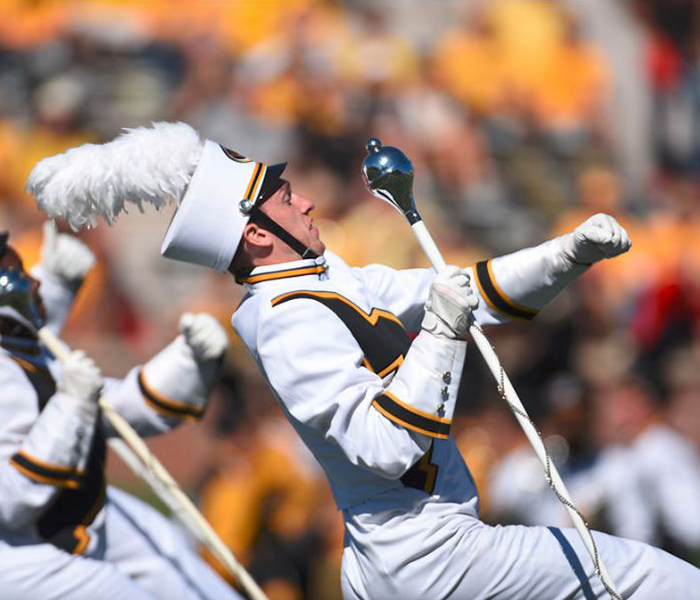

-

Marching Mizzou plans surprise for Homecoming
By Matt Noworul
Oct 12, 2018
Marching Mizzou began rehearsing last month for its Homecoming performances, with a few surprises in store.
“We like to call ourselves the soundtrack to the university,” said Amy Knopps, who is in her second year as director of Marching Mizzou.
An alumna of the band herself, Knopps said the performance will include a medley of game-show theme songs during the Homecoming halftime show to tie in with this year’s theme, “Game on, Tiger Strong.”
The band practices hard for every performance, the musicians said. “I think I woke up at 3:30 to get ready for the parade last year,” said John Darrah, a sophomore trumpet player.
The band practices Tuesday through Friday and again on game days, he said, and it will be well-prepared.
“I think we accomplished everything,” Darrah said. “I think it’s gonna be a good show.”
In addition to the new tracks the band has been rehearsing, Knopps said there will be a second surprise for the audience this year — new uniforms, the first since 2011.
“We’re really excited to show off our new look,” Knopps said. “It’s our own piece of history.”
She added that the band will take part in other Homecoming traditions, too, including the blood drive, and five band members are Homecoming royalty candidates.
“We love taking part in the full Homecoming experience,” Knopps said.
Marching Mizzou will perform at the Homecoming spirit rally on Oct. 19, during the annual Homecoming parade and during the halftime show of the football game on Oct. 20. Additionally, Mizzou’s drumline will participate in the Talent Show on Oct. 17.